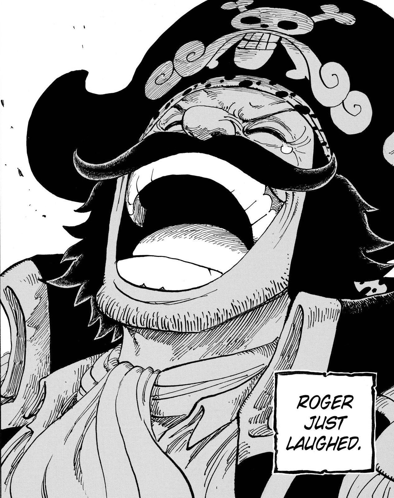
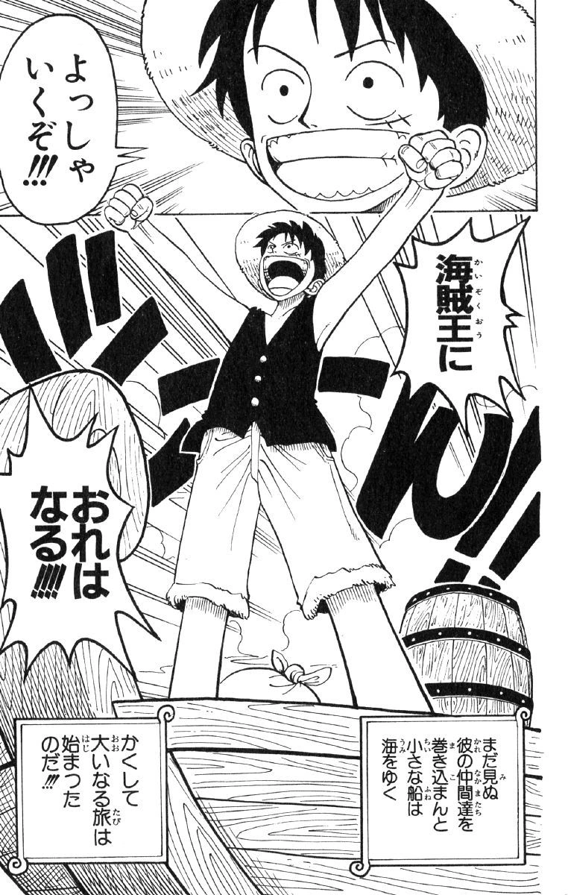

Bienvenido a nuestra página One Piece! Si estás buscando una aventura épica que te mantenga al borde de tu asiento y te deje ansioso por más, ¡has llegado al lugar correcto!
Imagínate explorar un mundo vasto y emocionante lleno de islas exóticas, piratas intrépidos y misterios sin resolver. ¡Eso es lo que te ofrece "One Piece"!
¿Qué hace que esta serie sea tan especial? Bueno, primero tienes a Monkey D. Luffy, un chico con una voluntad de acero y un sueño aún más grande: convertirse en el Rey de los Piratas. Acompañado por su tripulación, cada miembro con habilidades únicas y personalidades cautivadoras, se embarcan en una búsqueda para encontrar el legendario tesoro conocido como "One Piece".
Pero One Piece no es solo sobre encontrar un tesoro. Es sobre la amistad, la lealtad, la aventura y el crecimiento personal. Prepárate para reír, llorar y emocionarte mientras los personajes enfrentan desafíos increíbles, luchan contra enemigos formidables y descubren el verdadero significado de la camaradería.
Con batallas épicas, momentos conmovedores, y un mundo visualmente impresionante, One Piece te sumerge en una experiencia que no olvidarás pronto.
Así que ¿estás listo para zarpar hacia el Grand Line y unirte a la búsqueda del tesoro más grande de todos los tiempos? ¡Entonces únete a nosotros y prepárate para la aventura de tu vida con One Piece!
Gol D. Roger
Rey de los Piratas: Gol D. Roger fue el pirata más famoso y temido de su época. Su título como el Rey de los Piratas lo obtuvo tras alcanzar el legendario tesoro conocido como One Piece.
Monkey D. Luffy
Monkey D. Luffy es un joven audaz y decidido cuyo sueño es convertirse en el Rey de los Piratas. Desde su infancia, Luffy ha estado obsesionado con la idea de aventurarse en el mar y encontrar el legendario tesoro conocido como "One Piece". Después de comer una Fruta del diablo que le otorga la capacidad de estirar su cuerpo como goma, Luffy se convierte en un hombre de goma.